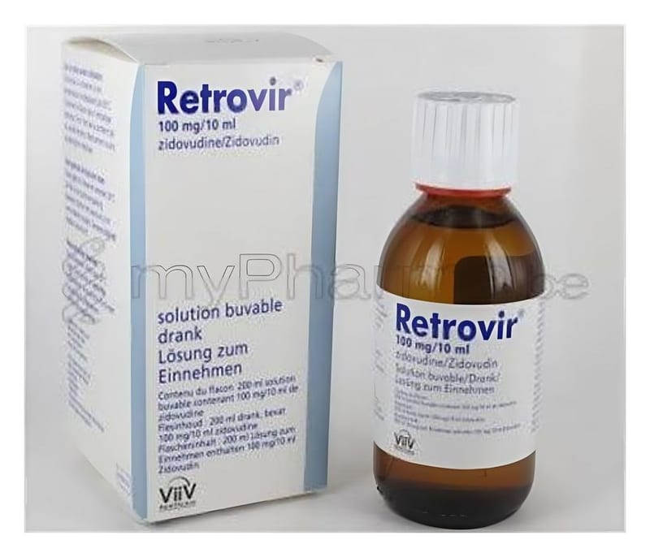

Retrovir 50 mg/5 ml Şurup

Ne için kullanılır
KT · Bölüm 1RETROVİR, “antiretroviral ilaçlar” adı verilen grubun bir üyesidir. İnsan Bağışıklık Yetmezliği Virü sünün (HIV) yol a çtığı enfeksiyonların (mikroorganizmaların yol açtığı hastalık) tedavisinde ve hamile kadınlarda HIV virüsünün (bir tür mikroorganizma) anneden çocuğa geçişinin azaltmasında kullanılır.
RETROVİR; plastik kapaklı, 200 mL’lik amber renkli cam şişelerde sunulmaktadır. Şişe ile birlikte 10 mL’lik veya 1 mL’lik bir dozlama şırıngası, açıldıktan sonra kullanılmak üzere polietilen tıpa ve çocuklar için emniyetli plastik kapak bulunmaktadır.